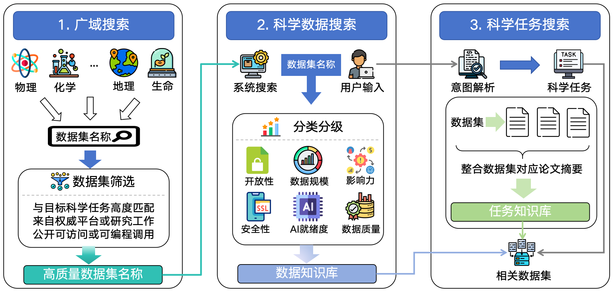

技术简介
技术路线图与简要说明
技术路线
Roadmap
路线说明：SciDataIndex 采用“广域发现—智能评价—任务驱动应用”三阶段技术路线。系统首先通过跨学科广域搜索获取潜在科学数据线索，并结合科研需求筛选高质量数据资源；随后基于多维指标对数据集进行分类分级与综合评估，构建统一的数据知识库；最终通过意图解析与任务匹配技术，实现面向科学问题的数据整合与智能推荐，为科研分析与模型建模提供精准数据支撑。
评价说明
六大评分维度与综合得分的评估方式
开放性
维度 1维度释义：开放性维度用于衡量数据集在法律与许可层面的开放程度，反映数据在共享、复用及再分发过程中的自由度与限制强度。该维度以数据集所采用的许可证类型作为主要评价依据，不同许可证根据其对商业使用、二次分发及衍生作品的限制程度被映射为相应的量化评分。
评估目标：衡量数据集在法律与许可层面的开放程度，反映数据可被共享、复用和再分发的自由度。
评分依据：数据集采用的许可证类型。
License Type — Score
PDLL10
CC09
CC BY / CC BY 4.08
CC BY-SA7
ODbL6
CC BY-NC5
CC BY-NC-SA4
CC BY-ND3
CC BY-NC-ND2
未知/其他0
数据质量
维度 2维度释义：数据质量维度用于近似衡量数据集的时效性与维护状态。考虑到开放网络环境中直接评估数据内容质量的难度，该维度以数据集最近一次更新的时间信息作为代理指标，通过更新时间的年份反映数据集是否处于持续维护或长期停滞状态。
评估目标：通过数据最近一次更新时间，近似衡量数据的时效性与维护状态。
评分依据：数据最后更新时间的年份。
Last Update Year — Score
>=202510
2020-20249
2015-20198
2010-20147
2005-20096
2000-20045
1995-19994
1990-19943
1985-19892
1980-19841
未提供0
数据规模
维度 3维度释义：数据规模维度用于衡量数据集在体量上的规模优势，体现其在支持统计分析、大模型训练及复杂任务建模中的潜在价值。该维度以数据体量（以 MB 为单位）的数量级作为评分依据，通过数量级映射方式反映数据规模的相对大小。
评估目标：衡量数据集在体量上的规模优势，反映其对大模型训练与统计分析的潜在价值。
评分依据：数据体量的数量级。
Data Volume(MB) — Score
>= TB级6-10
100-999GB5
10-99GB4
1-9GB3
10-999MB2
10-99MB1
<10MB0
未提供0
影响力
维度 4维度释义：影响力维度用于刻画数据集在学术研究或实际应用场景中的使用广度与认可程度。该维度主要基于与数据集相关的学术论文数量进行评估，例如通过 Google Scholar 等文献索引平台统计数据集被引用或使用的研究工作数量，从而反映其在科研社区中的实际影响。
评估目标：衡量数据集在学术界或应用场景中的实际使用和引用情况。
评分依据：与该数据集相关的学术论文数量。
Paper Count Digits — Score
>=7 (≥1M)10
6 (100k-999k)8
5 (10k-99k)6
4 (1k-9k)4
3 (100-999)2
<=2 (<100)0
未提供0
安全性
维度 5维度释义：安全性维度用于评估数据集在访问控制与使用合规方面的安全治理水平。该维度由两部分构成：一是数据访问与使用的管控程度，用于反映数据是否存在访问限制或使用约束；二是数据使用的可追溯性，用于衡量数据在传播和使用过程中是否具备身份记录或责任追踪机制。两部分评分分别设定上限，并组合形成该维度的整体评分。
评估目标：评估数据在访问控制与使用可追溯性方面的安全治理水平。
评分依据：由管控程度和可追溯性两部分组成，其中管控程度最高6分，可追溯性最高4分。
Control Level — Score
部分管控6
不受管控3
未知0
Traceability — Score
有元数据4
无元数据1
未知0
AI 就绪度
维度 6维度释义：AI 就绪度维度用于衡量数据集在多大程度上能够被直接或以较低成本用于人工智能及大模型训练与推理任务。该维度综合考虑数据的标注知识密度、预处理程度以及文件格式的一致性，其中标注信息反映数据对监督或弱监督学习的支持能力，预处理程度反映数据清洗与规范化水平，文件格式一致性则体现数据在工程使用中的便利性。
评估目标：衡量数据是否适合直接或低成本地用于 AI / 大模型训练与推理。
评分依据：由标注知识密度、预处理程度和文件格式统一性组成，其中标注知识密度最高3分，预处理程度最高4分，文件格式统一性最高3分。
Annotation — Score
有标注3
无标注1
未知0
Preprocessing Level — Score
已预处理4
已降噪处理3
已标准化处理2
未预处理1
未知0
Format Consistency — Score
格式统一3
格式不统一1
未知0
综合得分
权重汇总评分说明：综合评分体系用于刻画科学数据在科研应用与智能建模场景中的综合价值，
从数据规模、学术影响力、AI 就绪度、开放性、数据质量与安全性六个维度进行评估，
反映数据在可用性、研究价值与智能应用潜力方面的整体水平。
权重配置：权重设置综合参考典型科研场景需求与专家经验评估结果确定。
数据规模、学术影响力与 AI 就绪度作为核心指标，
重点体现数据对模型性能与科研产出的直接支撑能力；
开放性、数据质量与安全性作为基础保障指标，
用于刻画数据的可复用性、维护状态与合规风险水平。
Dimension — Weight
开放性0.10
数据质量0.10
数据规模0.30
影响力0.25
安全性0.05
AI 就绪度0.20
总评分公式
Total Score = 0.10 * Openness + 0.10 * Quality + 0.30 * Scale + 0.25 * Impact + 0.05 * Safety + 0.20 * AI Readiness